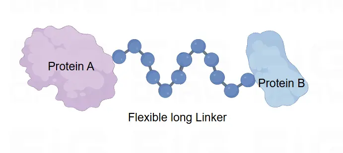

You can learn our parts’ information which we uploaded to iGEMs Registry of Standard Biological Parts.
Dnak is a molecular chaperone protein composed of 250 amino acids. We add it to the sequence with the aim of forming a recombinant protein with GLP-1. The binding and disaggregation of Dnak with ClpB is a dynamic process that varies with the ATP concentration within the bacteria. When ATP concentration rises (i.e., when elevated blood sugar leads to increased bacterial metabolism), Dnak disaggregates with ClpB, allowing the release of the GLP-1 recombinant protein into the extracellular space, thus achieving blood sugar concentration-dependent regulatory function. Flagx3 is a tagged sequence used for the screening and identification of fusion proteins in Western blot.
In E.coli, DnaK and ClpB are responsible for dissolving protein aggregates, with DnaK binding directly to the aggregate and recruiting the disaggregase ClpB . In the absence of DnaK, ClpB has been shown to have little disaggregation activity, but after directly binding with DnaK, the DnaK-ClpB complex shows high efficiency of disaggregation.
We fused DnaK, a key protein that leads to bacterial persistent resistance, with GLP-1. In the hyperglycemic state, glucose enters the bacteria and is used for aerobic respiration, producing more ATP, which reduces the affinity of ClpB-Dnak and depolymerizes the GLP-1 recombinant protein and releases it outside the cell. In the hypoglycemic state, the ratio of ATP to ADP decreases, the GLP-1 recombinant protein repolymerizes, and extracellular secretion is stopped.
The results of the agarose gel electrophoresis show that the plasmid in the engineered bacteria, after digestion with the restriction endonucleases BspDI and PuvI, produced two fragments of 1400 bp and 7500 bp, which are consistent with the expected results (as the restriction enzyme sites are located on the Dnak fragment). This indicates that Dnak was successfully ligated into the plasmid and introduced into the bacteria.
Pu Y, Li Y, Jin X, Tian T, Ma Q, Zhao Z, Lin S, Chen Z, Li B, Leake MC, Lo CJ, Bai F, ATP-dependent dynamic protein aggregation regulates bacterial dormancy depth critical for antibiotic tolerance, Molecular Cell73 (2019), pp. 1-14 (November. 21.2018 online)
With the development of molecular biology and synthetic biology, recombinant technology and fusion protein technology have become more and more mature. In order to achieve multifunctional protein multi-targeting, or to combine multiple proteins to coagulate into fusion proteins, the role of flexible protein peptides becomes more and more important. The sequence produced the aminoacids
Gly-Gly-Gly-Ser-Gly-Gly-Gly-Ser-Gly-Gly-Gly-Ser.
This is a connector that connects the proteins, and it has no effect on the parts to which it is attached. The sequence of the linker is designed for amino acids that do not interact with other amino acid residues. The sequence of the linker is designed for amino acids that do not interact with other amino acid residues. The amino acids glycine and serine are zwitterionic and hydrophilic, and these properties make them good candidates for linker repeats.The length of the connector is important to guarantee the independent function of the two connected parts. When the connector is too short, there may be spatial interference between the parts, and when the connector is too long, it can lead to structural instability. In addition, it is important that Linker has some flexibility.
The recombinant protein includes the GLP-1 fragment, pelB, Dnak, a flexible linker peptide sequence, and a Flag tag sequence.It is also an improved part of the 2024 Squirrel-CHN iGEM team Pel-GLP-1 Coding.
In this particular project, the overarching purpose of designing the GLP-1 recombinant protein is to enhance the adaptability and flexibility of Pel-GLP-1 Coding with the aim of achieving a glucose concentration-responsive functional release of GLP-1. Specifically, the release switch for GLP-1 is activated when the blood glucose levels ascend, which then proceeds to lower the glucose levels. Conversely, it is turned off when the glucose levels are low. The recombinant protein is composed of several key components, including the GLP-1 fragment, pelB, Dnak, a flexible linker peptide sequence, and a Flag tag sequence. As previously mentioned, pelB functions as a signal sequence that directs GLP-1 for extracellular secretion. Dnak, on the other hand, is the crucial core component of the glucose regulatory switch (more detailed information can be obtained from 2024 LZU-MEDICINE-CHINA iGEM team DnaK).
The mechanism of its action is as follows: When the glucose concentrations increase, the elevated internal glucose accelerates the metabolic process, which in turn elevates the ATP/ADP ratio. This leads to a weakening of the chaperone interaction between Dnak and ClpB. As the binding affinity reduces, the recombinant protein disassembles. Subsequently, this disassembly guides the release of the recombinant protein into the extracellular space. This intricate process demonstrates the sophisticated design and functionality of the GLP-1 recombinant protein system, which holds great potential for applications in the field of glucose regulation and related biomedical research. It provides a novel approach to precisely control the release of GLP-1 in response to changes in glucose levels, potentially leading to the development of more effective therapeutic strategies for conditions related to glucose metabolism disorders. Further investigations and optimizations of this system could pave the way for significant advancements in the treatment and management of such disorders, contributing to improved healthcare outcomes in the future.
As previously mentioned, the components of the recombinant protein are derived from diverse organisms. Each part is meticulously selected to fulfill a specific role, with the aim of ensuring the overall functionality and responsiveness of the protein in regulating blood glucose levels. The GLP-1 fragment, for instance, is crucial for its direct interaction with the relevant physiological processes involved in glucose metabolism. PelB, sourced from a particular organism, is chosen as it effectively functions as a signal sequence to guide the GLP-1 towards extracellular secretion, facilitating its release into the appropriate environment to exert its regulatory effects. Dnak, originating from another organism, plays a central role in the glucose regulatory switch. Its specific properties and interactions within the protein complex are essential for sensing changes in glucose concentrations and initiating the corresponding responses. The flexible linker peptide sequence provides the necessary flexibility and conformational stability, allowing the different components to interact and function in a coordinated manner. The Flag tag sequence, although seemingly small in comparison, also has its significance, perhaps in terms of facilitating detection and identification of the recombinant protein during research and experimentation. Together, these components from different organisms work in harmony to endow the recombinant protein with the ability to precisely respond to changes in glucose levels and carry out its regulatory function, which holds great promise for applications in the field of diabetes treatment and glucose homeostasis research.
In the meticulous design of the recombinant sequence, we gave thorough consideration to the positioning of each segment with the intention of optimizing the glucose regulation functionality to the greatest extent. PelB is strategically placed at the N-terminus, as this positioning is crucial for facilitating the efficient secretion of GLP-1. Right after PelB comes the GLP-1 sequence, which acts as the central and essential component for carrying out the primary function of glucose regulation. Following the GLP-1 sequence, we deliberately included a flexible linker peptide sequence, specifically (GGGSGGGSGGGS). This linker sequence is designed to ensure a seamless and smooth transition to the subsequent Dnak sequence, enabling proper interaction and functionality between the adjacent components. After Dnak, we added a 3xFlag tag, which serves a vital purpose in the identification of the recombinant protein expression. This tag allows for easy detection and tracking of the protein during various experimental procedures and analyses. This comprehensive approach to sequence design and verification is essential to guarantee the successful development and application of the recombinant protein in the field of glucose regulation research and related biomedical applications.